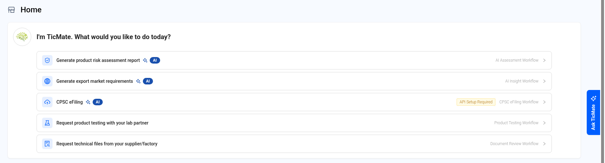
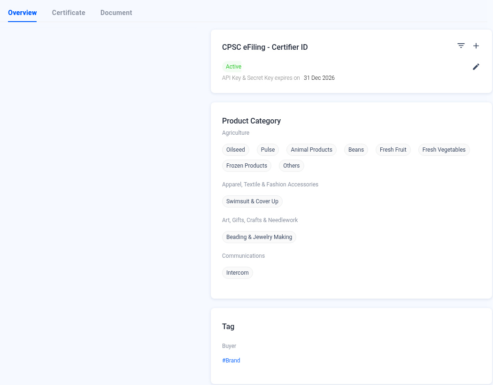

Getting Started — Home, Settings and Company Profile
Find your way around QMAS: the Home page, the top bar and your company settings.
Screenshot slots: 3 reviewed replacement images.
Overview
- Home shows quick workflows, items that need your attention, and an overview of your business.
- The left menu opens each module.
- The top bar has analytics, messages, notifications, the account avatar, help and credits.
- Settings opens from the avatar (account control) in the top bar. The menu includes Company Profile, Password, Languages, Account Management, Assign TicMart Job and Logout.
Step-by-step
1. Home
TicMate says “I’m TicMate. What would you like to do today?” and lists these workflow shortcuts:
- Generate product risk assessment report (AI Assessment workflow).
- Generate export market requirements (AI Insight workflow).
- CPSC eFiling. If it shows “API Setup Required”, set up your Certifier ID in Company Profile first.
- Request product testing with your lab partner (Product Testing).
- Request technical files from your supplier/factory (Document Review).
Attention counts the items that need action in each module, such as Product Testing, Document Review, QC Inspection, IQC Inspection, Factory Audit, Pending Review Doc and Expired Doc. Click a card to see them.
Business Overview shows your active products, suppliers, factories and partners. Click › to open the list.
Ask TicMate on the right edge opens the TicMate assistant.

2. Settings menu
Click your avatar (account control) in the top bar:
| Option | What it does |
|---|---|
| Company Profile | Company details, certificates, documents, product categories and CPSC eFiling Certifier ID. |
| Password | Change your password. |
| Languages | Change the system language. |
| Account Management | Manage your company's user accounts. |
| Assign TicMart Job | Assign jobs from the TicMart marketplace. |
| Logout | Signs you out of QMAS. |

3. Company Profile
Click the pencil icon next to the company name to edit it. The Overview, Certificate and Document tabs hold your company information. CPSC eFiling - Certifier ID is where you add and manage the API key for eFiling. Product Category lists the categories your company works with.

Tips
FAQ
- How do I change the language?
- Click your avatar (account control) in the top bar, then Languages.
- How do I change my password?
- Click your avatar (account control) in the top bar, then Password.
- Where do I edit my company information?
- Click your avatar (account control), then Company Profile (https://qmas.icw.io/company-profile).
Help Center additions and remaining gaps
This section adds Help Center material and named gaps. It does not replace the steps above.
How these labels are used
- Source-documented — written in the original Help Center. The last-edited date is given. That does not by itself prove the current QMAS UI.
- Dev-verified — confirmed on qmas-dev.icw.io during guide work.
- Gap — named as missing or too thin. Not current behaviour until checked on dev.
Reviewed screenshots remain 56 of 98. Forty-two inventory slots are still pending. Six supplementary images are not part of the 98. Unreviewed screenshots were not copied.
Dev-verified — already in the steps above
Settings opens from the avatar / account control. That correction is already in the steps above.
Home shows 5 TicMate workflow shortcuts: AI Assessment, AI Insight, CPSC eFiling, Product Testing, Document Review.
Source-documented — Help Center onboarding (last edited 2024-04-02)
Source: Help Center Getting Started, https://app.notion.com/p/cee08d7673aa467797efb39efe68bbdc. This does not replace the Home walkthrough above.
The 2024 landing tells new accounts to watch the walkthrough videos, set up Product Compliance and Supplier Management, schedule an onboarding session after the customer-success email (or use Help Center Support if that email is missing), then use the Help Center and product-update emails.
Those 2024 setup guides still say “top menu bar”. Prefer this page and the current create guides for live steps.
- Set Up Your Product Compliance Module (2024-04-02), historical: https://app.notion.com/p/3200ac0e049d4aa8b2409bad15cea3cd
- Set Up Your Supplier Management Module (2024-04-02), historical: https://app.notion.com/p/01167450c4d54a98a3670fe13e056f12
Help Center videos were not re-watched and are not current-UI evidence:
- Introduction of QMAS: https://www.youtube.com/watch?v=Qn02Yu-0Ppk
- Manage your product compliance with QMAS: https://www.youtube.com/watch?v=3zpn_gHhW7s
- How to request quotation for product testing with QMAS: https://www.youtube.com/watch?v=AaZ9zHeQ23s
- How to manage your supplier information with QMAS: https://www.youtube.com/watch?v=xZyHOMg7_yc
Source-documented — FAQs (last edited 2022-12-19)
Source: https://app.notion.com/p/84844e89cab14819b021b0aa8e33ef31
- Ordering product testing: the FAQ points at the Help Center Product Testing article.
- Cancelling a product testing order: “contact our customer support team via email or online chat.” Not re-verified against current Support or in-app cancel behaviour.
- Integrating an existing supplier or product database: the 2022 FAQ says an import feature is available and mentions an enterprise API plan. Treat the plan and API wording as historical until confirmed.
Remaining gaps
- Notifications and Messages centers. No Help Center article. Exact paths need a dev check. No new module was invented.
- Company Profile Certificate, Document, and CPSC eFiling Certifier ID setup. The page above is an overview only.
- Attention card drill-downs, including Factory Audit and Pending/Expired Doc.
- TicMate / Ask TicMate usage beyond the shortcut list.
- Login page. Older notes say it is outdated. It is not on the public guide.
- Naming is still undecided: Home AI Assessment and AI Insight, menu AI Risk Screening, and this guide title AI Insight.
Help Center reconciliation 2026-11-13 (HKT). Original Help Center not edited. This draft is not the public guide at the marconip2026 site. No Dify upload.